Back
Learn Bahasa - Grammar
Kosakata dan Ungkapan
1. Tempat Berbelanja
| Pasar | Market |
| Pasaraya | hipermarket |
| Pasar swalayan | Supermarket |
| Toko | shop,store |
| Toko serba ada (toserba ) | Departement store |
2. Kain Traditional
| Batik | Batik |
| Sarung | Sarong |
| Songket | (a kind of) woven sarong |
| Tenun | Woven , Cloth |
| Ulos | Traditional batak cloth |
3. Buah-buahan
Belimbing (starfruit)

Durian (Durian)

Mangga (Mango)
Semangka (Semangka) 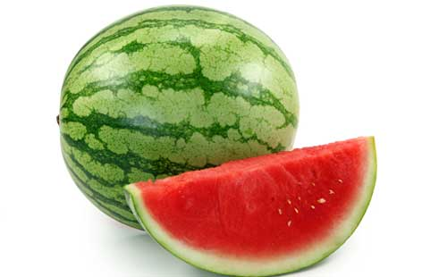
Jambu Biji (Guava) 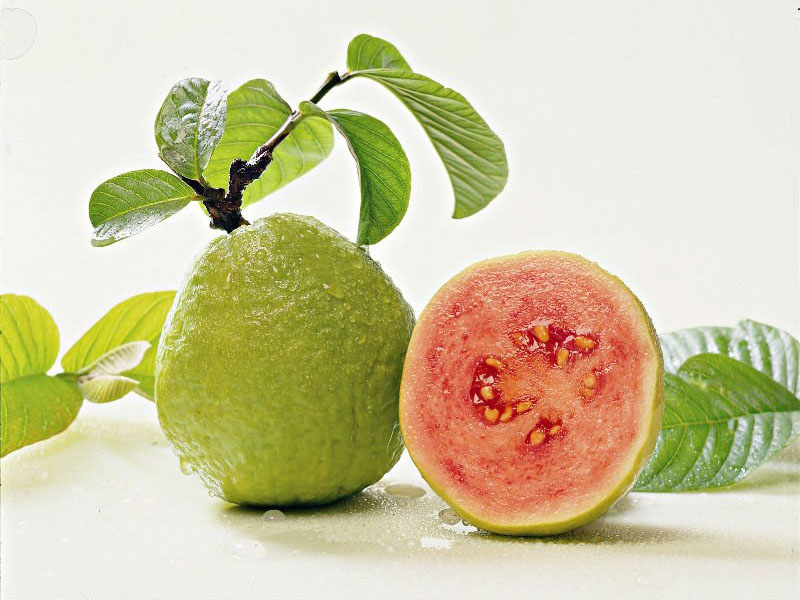
Rambutan (Rambutan) 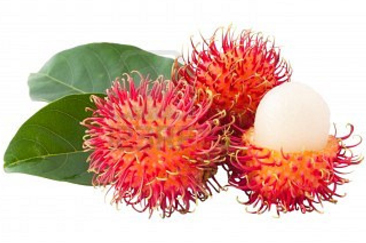
Pisang (Banana)
Durian (mangosteen)
manggis (mangosteen)

Kelengkeng (a kind of longan) 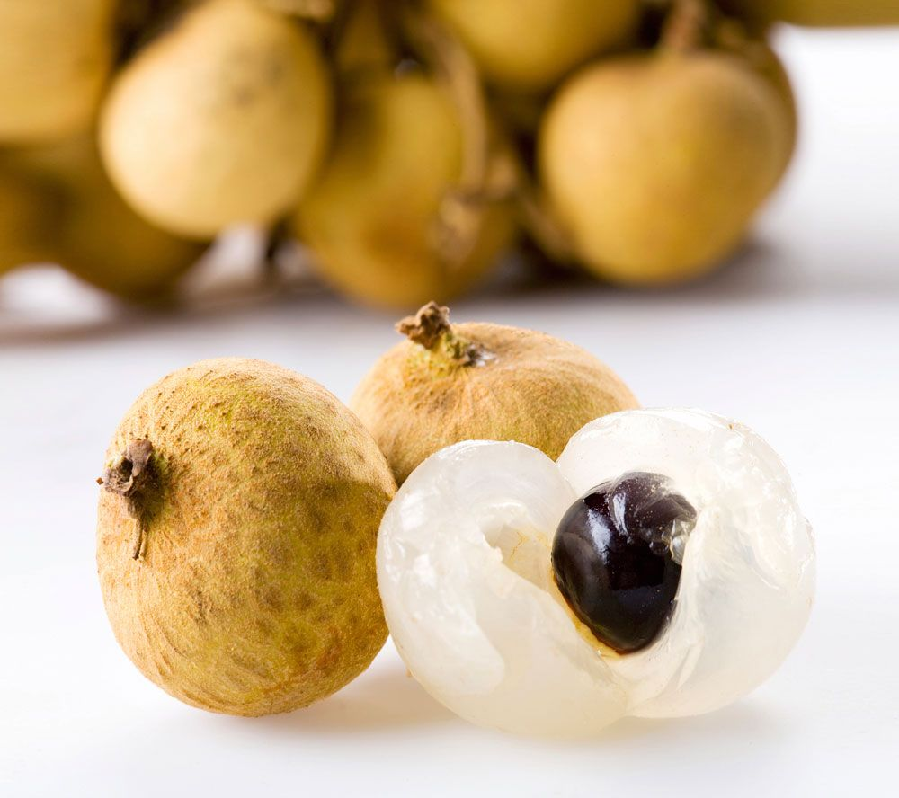
Nanas (Pineapple) 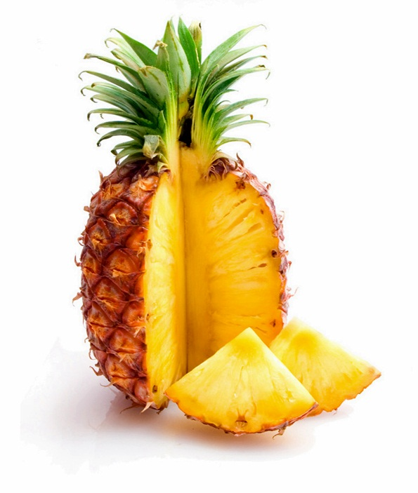
4. Sayur-sayuran
Cabai (Chilli)
Terong (eggplant) 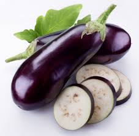
Bayam (Spinach)
Lobak (Radish) 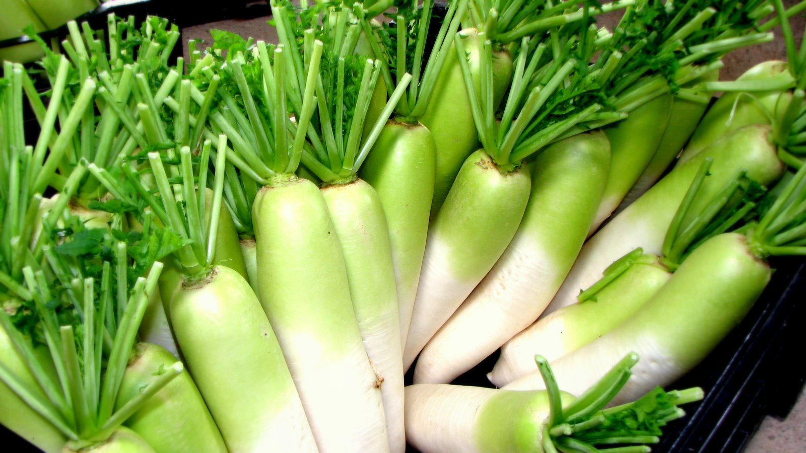
Wortel (Carrot) 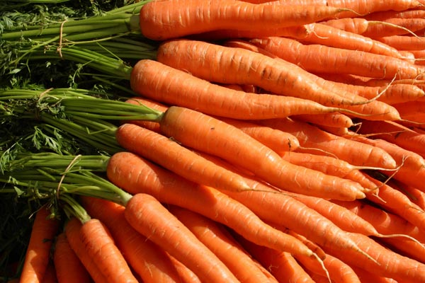
Selada (Lettuce) 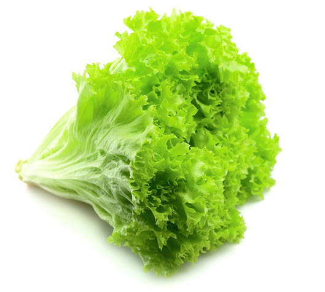
Kacang panjang (Long bean) 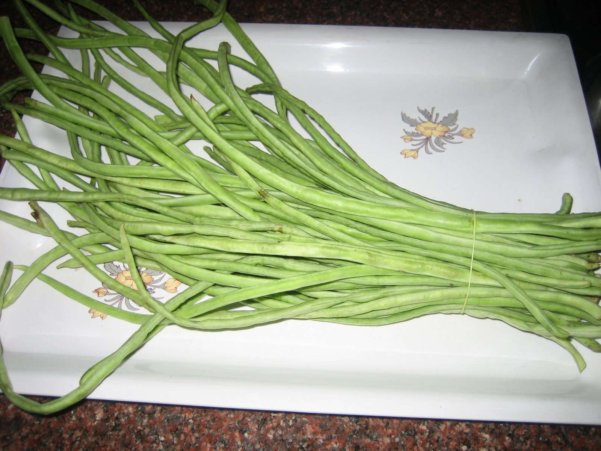
Kubis (Cabbage) 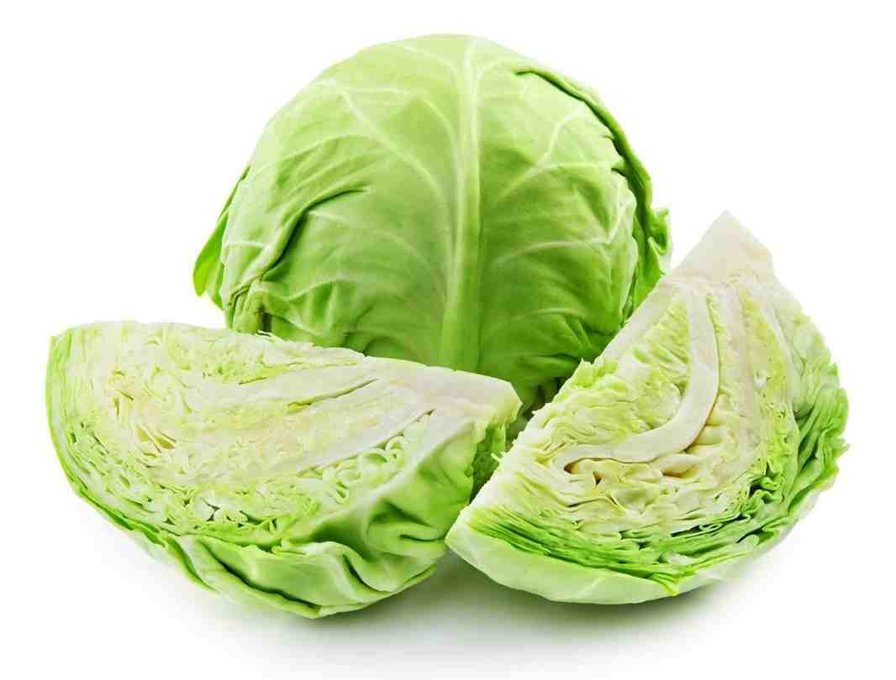